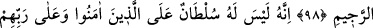
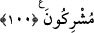

SİZİN YANINIZDAKİ
MALLAR TÜKENİR
96. Sizin yanınızdaki (dünya malı) tükenir, Allah katındakiler ise bâkîdir. Elbette
sabırlı davrananlara yapmakta olduklarının en güzeliyle mükâfatlarını vereceğiz.
97. Erkek veya kadın, mümin olarak kim iyi amel işlerse, onu mutlaka güzel bir
hayat ile yaşatırız. Ve mükâfatlarını, elbette yapmakta olduklarının en güzeli ile
veririz.
98. Kur’an okuduğun zaman o kovulmuş şeytandan Allah’a sığın!
99. Gerçek şu ki: İman edip de yalnız Rablerine tevekkül edenler üzerinde onun
(şeytanın) bir hâkimiyeti yoktur.
100.Onun hakimiyeti, ancak onu dost edinenlere ve Allah’a ortak koşanlaradır.
“Sizin yanınızdaki” dünya malı ne kadar çok olursa olsun “tükenir” biter ve yok
olur. “Allah katındakiler” Allah’ın rahmetinin muhtelif şekilleri “ise bâkîdir.”
tükenmeden devam eder. Bu âyet, Cehmiyye’nin aleyhine bir delildir. Çünkü onlar
cennet nîmetlerinin son bulup tükeneceği görüşündedirler.
“Elbette sabırlı davrananlara” müşriklerin eziyetlerine, ahde vefa gibi İslâm’ın
mükellefiyetlerine ve fakirliğe sabredenlere bu sabırlarının karşılığı olarak “yapmakta
olduklarının en güzeliyle” kendilerine has “mükâfatlarını vereceğiz.” Zikredilen
sabırlarının karşılığını mutlaka vereceğiz.
“en güzeliyle” ifâdesi, “Âhiret sevabının güzelini (onlara verdi)” (Al-i İmran,
3/148) âyetinde olduğu gibi mükâfâtın güzelliğinin kemâl üzere olduğunu hissettirmek
içindir.
Bu âyetlerden anlaşılmış oldu ki ahde vefa, îmanda sebat ve çetin işlere sabrın
dünyevî ve uhrevî sevapları vardır. Şu halde akıllı kişiye gereken, Allah’la kendi